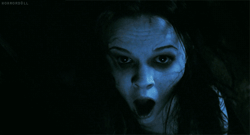

|  |
Leonor se mudaba de nuevo. A su madre le encantaba la restauración, así que su predilección por las casas antiguas empujaba a la familia a llevar una vida más bien nómada. Era la primera noche que dormían allí y, como siempre, su madre le había dejado una pequeña bombilla encendida para espantar todos sus miedos. Cada vez que se cambiaban de casa le costaba conciliar el sueño. |
|
La primera noche apenas durmió. El crujir de las ventanas y del parqué la despertaba continuamente. Pasaron tres días más hasta que empezó a acostumbrarse a los ruidos y descansó del tirón. Una semana después, en una noche fría, un fuerte estruendo la sobresaltó. Había tormenta y la ventana se había abierto de par en par por el fuerte vendaval. Presionó el interruptor de la luz, pero no se encendió. El ruido volvió a sonar, esta vez, desde el otro extremo de la habitación. Se levantó corriendo y, con la palma de la mano extendida sobre la pared, empezó a caminar en busca de su madre. Estaba completamente a oscuras. A los dos pasos, su mano chocó contra algo. Lo palpó y se estremeció al momento: era un mechón de pelo. Atemorizada, un relámpago iluminó la estancia y vio a un niño de su misma estatura frente a ella. Arrancó a correr por el pasillo, gritando, hasta que se topó con su madre. “¿Tu también lo has visto?”, le preguntó.
Puedes continuar con la historia |
REGISTRANDOTE..... |